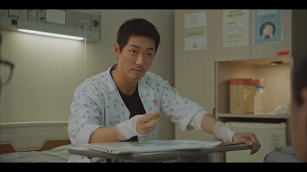
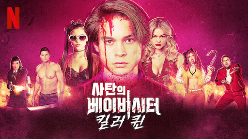
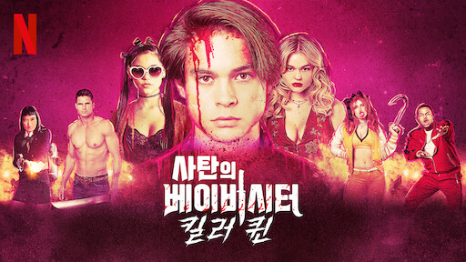

낮과밤
2020 | 15+ | 시즌1개 | 스릴러
예고장에 적힌 대로 살인이 발생한다! 계속 이어지는 현재의 예고 살인, 그리고
28년 전 한 마을에서 벌어진 의문의 참사. 서울지방경찰청 특수팀이 두 사건을
잇는 어두운 비밀을 파헤친다.
주연 : 남궁민,김설현,이청아
크리에이터 : 김정현,신유담
무제한으로 즐기세요
영상
| 낮과 밤
예고편: 낮과 밤
회차
| 낮과 밤
낮과 밤
공개일 : 2020
예고장에 적힌 대로 살인이 발생한다! 계속 이어지는 현재의 예고 살인, 그리고 28년 전 한 마을에서 벌어진
의문의
참사. 서울지방경찰청 특수팀이 두 사건을 잇는 어두운 비밀을 파헤친다.
참사. 서울지방경찰청 특수팀이 두 사건을 잇는 어두운 비밀을 파헤친다.
-
1화
63분예고장을 보내는 살인 사건이 또 일어난다. 익명의 제보를 통해 이번 희생자를 찾으러 수영장 파티에 간 경찰. 도정우는 다음번 살인의 위치를 알아내려고 암호를 해석한다. -
2화
66분수사팀에 합류한 FBI 출신 프로파일러 제이미. 정우의 파트너가 된 후 그의 말에서 수상한 점을 알아챈다. 이지욱은 비밀리에 피해자를 뒤쫓아 영상을 찍고 특종감을 얻는다. -
3화
67분정우를 의심하는 제이미와 달리, 그를 믿는 공혜원. 팀은 다음 표적인 손민호를 조사하면서 하얀밤 마을 참사 사건을 다룬다. 민호는 이 마을의 생존자를 범인으로 보는데. -
4화
68분정우가 하얀밤 마을 출신임을 밝히자 제이미는 어두운 어린 시절에 대해 말한다. 민호의 집을 주시하는 팀은 이곳의 방범 카메라 접속이 막혀 있자 이를 뚫기 위해 노력한다. -

5화
68분처참한 저택에서 생존자를 찾은 혜원. 뉴스 매체는 현장에서 영웅적인 활약을 보인 경찰관을 대대적으로 보도한다. 이를 통해 진범에 관한 핵심 단서를 모으게 된 제이미. -
6화
67분혜원은 숲속 살인 현장에서 범인을 체포하지만, 사건 소관이 검찰로 넘어가자 당황한다. 누가 자신에게 수술해준 것인지 알아내려는 제이미는 의사를 찾아가 정보를 얻는다. -
7화
60분병원에서 칼 든 괴한에게 공격받는 정우. 혜원과 함께 도망친 후 경찰청에 가게 된다. 지욱은 USB를 우편으로 받는다. 이 드라이브에는 의문을 제기하는 영상이 담겨 있는데. -
8화
59분민호에게 자백을 강요하는 제이미. 지욱은 혜원에게 새로운 영상을 보여준다. 인체 실험이 끝나지 않았음을 알게 된 정우는 백야재단의 각하와 연락할 방법을 찾으려고 한다. -
9화
60분공일도의 사무실에서 정우는 자료를 살펴본 후 당사자에게 답을 요구한다. 한편 아빠가 민호와 함께 있는 사진을 발견한 혜원. 이전 증거물에서 충격적인 영상을 보게 된다. -
10화
59분범죄 현장에서 익숙한 얼굴을 보고 세 번째 생존자를 알아낸 제이미. 혜원은 아빠가 탄 차를 미행하고, 정우는 애들이 탄 밴을 따라간다. 그런데 두 차량의 행선지가 같다? -
11화
60분백현수의 죽음을 조사하는 정우는 오정환과의 연결 고리를 밝혀낸다. 과거와 현재의 실험에 대해 아빠에게 직접 묻는 혜원. 제이미는 기억을 되찾으러 하얀밤 마을로 향한다. -
12화
59분지욱이 새로운 살인 예고장을 보도한다. 한편 정우의 비밀 자료실에 접근하면서 그의 의도를 알게 된 혜원. 하얀밤 마을에서는 28년 전 비극의 밤에 숨겨진 진실이 드러난다. -
13화
59분마을에 관한 모든 기억을 되찾은 제이미는 오랫동안 잊고 살았던 쌍둥이 오빠를 다시 만난다. 정우는 비밀 연구소로 안내해주면 아들을 돌려주겠다고 정환에게 전화한다. -
14화
59분또 살인 예고장을 받은 지욱. 정환은 노화가 빨라져 우려를 표한다. 장용식은 재웅의 정체와 살인 계획에 대해 누군가에게 알려주고, 정우는 비밀 연구소의 위치를 찾는다. -
15화
61분민호에게 더 많은 실험체를 공급하도록 명령하는 정환. 혜원은 아빠를 설득하려 하지만, 통하지 않자 정보를 알려준다. 덕분에 일도는 정우의 안경을 통해 공식을 완성한다. -
16화
70분약을 완성하려는 조현희. 실험을 마친 후, 정우의 피를 얻기 위해 제이미를 인질로 이용한다. 시한폭탄이 설치된 연구소에서는 폭발 전에 모두가 탈출하는데. 두 명만 빼고.
상세 정보
오프라인 시청
장르
시리즈 특징:
저장 기능은 광고 없는
멤버십에서만 이용 가능합니다.
멤버십에서만 이용 가능합니다.
SF 시리즈,액션 & 어드벤처 시리즈,범죄 시리즈,스릴러 시리즈,한국 드라마
어두운,긴장감 넘치는
출연
남궁민
김원해
백지원
김원해
백지원
김설현
윤경호
우현
윤경호
우현
이청아
이신영
이신영
윤선우
최대철
최대철
김창완
최진호
최진호
함께 시청된 콘텐츠
 



공개 임박
메니페스트
사냥개들
바비의 인어 공주 이야기
레지던트 이불 2
리키줌
비행기가 착륙하니 세계는 불가사의하게도
이미 수년이 지나있고, 시간의 흐름이
캄승객들만 비껴간 것 같다. 도착한 승객들은
기이한 새로운 현실과 마주한다.
이미 수년이 지나있고, 시간의 흐름이
캄승객들만 비껴간 것 같다. 도착한 승객들은
기이한 새로운 현실과 마주한다.
두 청년 복서가 선한 대부업자와 한뜻으로
뭉친다. 돈 때문에 절박한 약자들을 먹잇감
삼는 악랄한 사채업자에 대적하기 위해.
뭉친다. 돈 때문에 절박한 약자들을 먹잇감
삼는 악랄한 사채업자에 대적하기 위해.
자신이 인어라는 사실을 알게 된 소녀 멀리아.
서핑 챔피언인 멀리아는 돌고래의 도움을 받아
오세아나의 여왕인 엄마를 구해야 한다!
서핑 챔피언인 멀리아는 돌고래의 도움을 받아
오세아나의 여왕인 엄마를 구해야 한다!
죽음의 바이러스가 확산되자 봉쇄에 들어간
라쿤 시티. 좀비와 함께 그곳에 갇힌 앨리스와
엘리트 군단은 새로운 악의 등장을 마주한다.
라쿤 시티. 좀비와 함께 그곳에 갇힌 앨리스와
엘리트 군단은 새로운 악의 등장을 마주한다.
리키 줌과 단짝 바이크 친구들이 바이크 마을
휠포드를 쌩쌩 달려요. 구조 임무도 해내고
빠르게 움직이는 스턴트도 배운답니다.
우리도 함께 신나게 달려볼까요!
휠포드를 쌩쌩 달려요. 구조 임무도 해내고
빠르게 움직이는 스턴트도 배운답니다.
우리도 함께 신나게 달려볼까요!
아놀드
러브 데스티나: 더 무비
뷰티풀 라이프
보디빌딩 챔피언부터 시작해 할리우드
아이콘을 거쳐 정치인이 되기까지, 아놀드
슈워제네거의 다각적인 삶과 커리어를 따라가는
내밀한 다큐시리즈.
아이콘을 거쳐 정치인이 되기까지, 아놀드
슈워제네거의 다각적인 삶과 커리어를 따라가는
내밀한 다큐시리즈.
다른 생에서 사랑했던 여인을 꿈에서 본 한
남자. 그녀를 다시 만나게 될 운명이라고
믿는다. 하지만 정체를 알 수 없는 시간 여행자가
나타나 그의 계획을 방해한다.
남자. 그녀를 다시 만나게 될 운명이라고
믿는다. 하지만 정체를 알 수 없는 시간 여행자가
나타나 그의 계획을 방해한다.
남다른 재능을 숨기고 살던 청년 어부가 어느
날 한 음악 프로듀서의 눈길을 끈다. 그의
앞에서 손짓하는 스타덤과 사랑. 그는 이 새로운
길에 뛰어들 준비가 되었을까?
날 한 음악 프로듀서의 눈길을 끈다. 그의
앞에서 손짓하는 스타덤과 사랑. 그는 이 새로운
길에 뛰어들 준비가 되었을까?